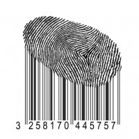

Monetizing Personal Data
Did you know that your personal information is being sold to advertisers right now as you read this? Well, I'm not doing it, but other sites certainly are. Yet, it probably doesn't come as so much of a shock to you as it might have to internet users 10 years ago. Anyone who's been using Facebook or watching Youtube recently can probably tell that those sites have an advertising profile for their users. Right now, I see tons of Dev Bootcamp banner ads when I watch videos on Youtube. And I still find an occasional ad for Tokyo Living, though it's been over a year since I've lived in Japan. Anyway, my point is that companies know a lot about us, and are more than willing to sell that information for a profit.
So what?
I mean, that's basically just now the internet works these days. Tech companies can't offer a free service without finding some way to monetize, right? Well, yes and no. The problem is not with the model, but rather with the near-clandestine way in which personal data is being used. What information is being sold? Who is it being sold to? What information, if any, is actually considered private? The answers to these questions are either never explicit, or hidden inside of 20 page long user-end agreements. While there's nothing illegal about this, it's also not terribly transparent.
What can be done?
Let's be clear: tech companies are absolutely well within their rights to try and make money off of the services they provide. Without such a model, we'd probably have to pay for all our online services. So on top of a monthly internet fee, we'd have a Facebook profile fee, a Youtube access fee, perhaps a pay-per-search Google fee... the list goes on.
The best thing that tech companies can do is increase transparency. Tell users exactly what information is being monetized, and perhaps give them the option to make certain things private. I think an increase in openness would increase user trust and loyalty, without hurting the company's profits. I don't mind seeing more ads for "learn to program" style companies. It's what I'm interested in.
Though if anyone from Google is reading this, could you add to my profile that I don't particularly like Coors Light?